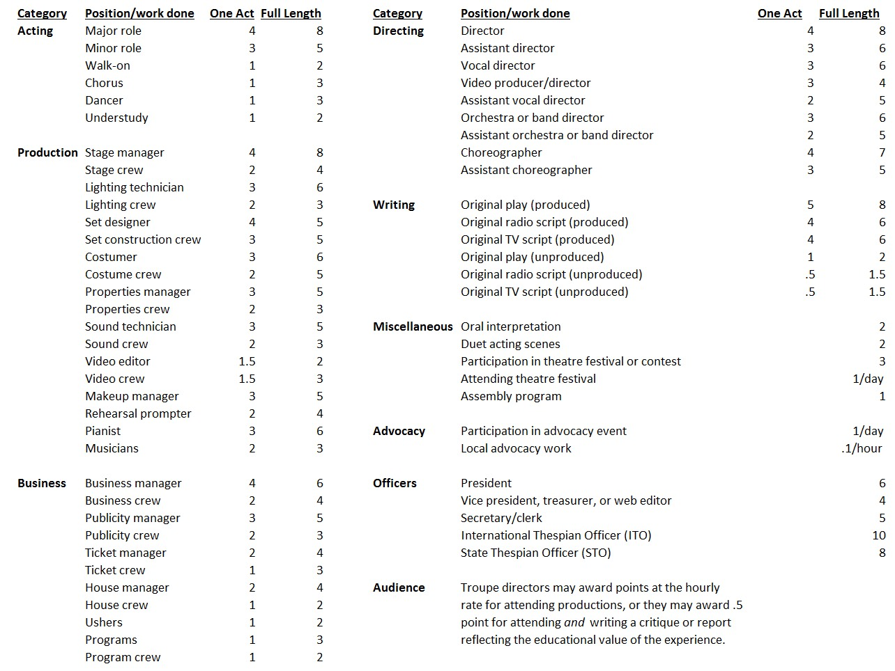

The International Thespian Society (ITS) is the honor society for secondary school theatre students. Membership is granted for the performance of meritorious work in theatre arts. High school Thespian induction eligibility requirements and procedures are detailed in the Thespian Troupe Handbook.
This website is a tool designed to help you keep an accurate record of students' accomplishments and progress toward earning induction into the International Thespian Society.
Recognition from an international honor society lends additional stature to student honors and the program as a whole in the eyes of the school, community, and colleges.
Funding and resources follow success. ITS provides opportunities to showcase your successes:
• Induction ceremoniesClear, attainable goals. Our point system incorporates recognition through a series of pro- gressively higher honors. This adds structure to the program and keeps students motivated to stay involved throughout their school careers. Student leadership opportunities. Elected troupe officers often work under the guidance of the troupe director to handle most day-to-day troupe operations and train their successors to provide continuity.
ITS programs expand students' educational and theatrical horizons including:
TRAINING by state and national theatre arts educators and working professionals
COLLABORATING with students from other schools
ASSESSMENT AND RECOGNITION of their skills based on national standards
Professional development for troupe directors
ITS troupe directors are full members of the Educational Theatre Association, (EdTA), which provides topnotch professional development and networking opportunities, including the EdTA National Conference.Point values are as follows:
